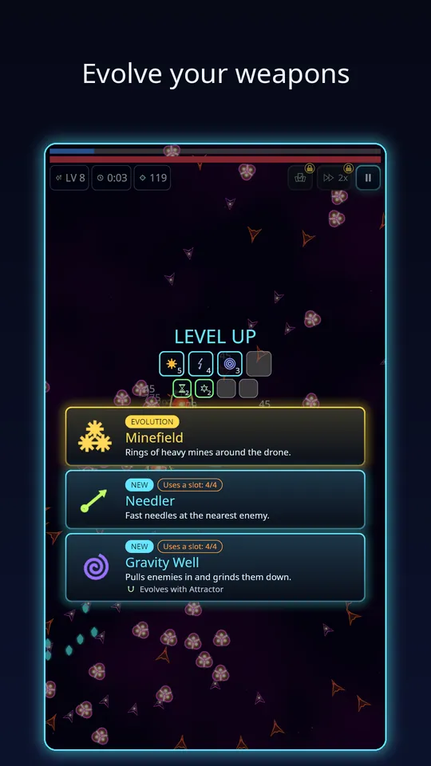
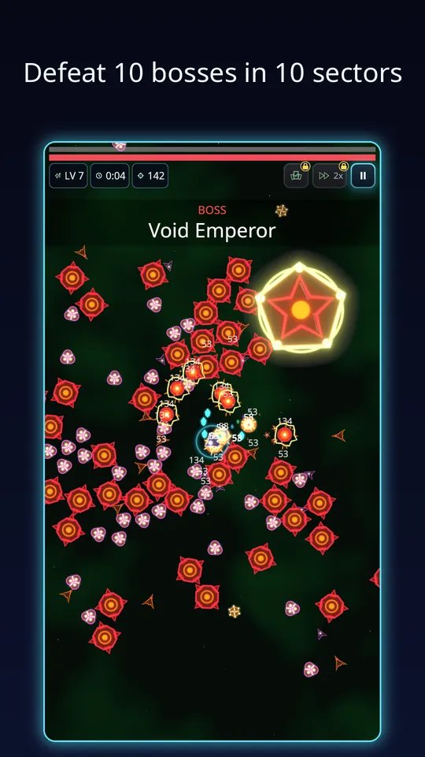

If you have wondered how weapon evolutions work in Void Swarm, the idea is simple, though the planning is where the fun is. In each run you collect weapons and passives through level-up cards. When a weapon is maxed and you also own its matching passive, an Evolution card appears and the weapon becomes a bigger, stronger version of itself. New to the game? Start with the overview of Void Swarm.
The rule in one line
You can test every pairing below in Void Swarm: Idle Survivor on Google Play.
Maxed weapon plus matching passive equals evolution. There are 20 weapons, 15 passives and 10 evolutions in total, so not every weapon evolves, and each evolving weapon wants one specific passive. In the data, a pair looks like this: the Blaster evolves with Overclock into the Nova Blaster, the Saw with Plating into the Ripper, and the Arc with Might into the Tempest. Other pairs include Torch and the Accelerator passive for the Inferno, and a mine-laying weapon with Capacitor for the Minefield.

How the game helps you plan
You do not need to memorise a table. When a level-up card offers a weapon that has an evolution partner, the card names the passive it evolves with, like the small line under Gravity Well in the screenshot. The slot rows at the top of the level-up screen show what you hold, so you can see at a glance whether you still have room. The Auto Pick extra also weighs weapon synergy when it chooses for you.
A simple way to build around an evolution
Step 1: pick a weapon you like early
In the first levels, choose a weapon whose pattern suits your style: a Saw for orbiting protection, Arc for chain lightning on crowds, a Blaster for reliable damage. You can also start from a drone whose starting weapon already has an evolution, which gets you there sooner. There are 8 drones, each with its own starting weapon and perk.
Step 2: take the partner passive when it appears
The matching passive is useful on its own, so grabbing it is never a waste: Overclock, Plating and Might all improve your drone in their own right. Take it as soon as it shows up, so that the day the weapon reaches its maximum level, the Evolution card is ready.
Step 3: keep feeding the weapon
Choose that weapon every time it is offered. Spreading level-ups over many weapons is the most common reason an evolution comes late, or never. If you notice you are one level short, that is the card to take.
Why evolutions matter so much
The longer a run goes on, the bigger the swarm gets, and the boss waits at the end of the ten minutes. An evolved weapon is usually the difference between scraping through and clearing the screen. It also is a lovely moment: the Minefield, for instance, turns a few mines into rings of heavy mines around the drone.

Evolutions and the rest of the build
Evolutions are not the only way to get stronger. Between runs, your base and research tree add permanent bonuses, and weapon mastery makes the weapons you use most grow stronger over time. The more you play a favourite weapon, the better its evolution will be. Our beginner tips explain where to spend your first Scrap, and the piece on the idle base explains how that Scrap is earned.
Common mistakes
- Taking one of everything. Slots fill up and nothing ever maxes.
- Ignoring the passive. The weapon is maxed, but the Evolution card never shows up.
- Waiting too long to commit. By minute six, with the boss coming, the build should already be set.
A worked example
Say you start with the Blaster. You take it at level one, then keep choosing it each time it is offered. At the same time, you pick Overclock when it appears, because faster fire is good anyway. A few levels later the Blaster reaches its maximum level, and the next level-up screen shows a gold Evolution card: the Nova Blaster. You take it, and from that point the basic gun in that slot is a much stronger weapon. The same logic applies to every pair, so the plan never changes: weapon, partner passive, then evolve.
Because the passive is chosen from the same pool of cards as everything else, you have some luck involved. If the partner does not show up, other cards still make you stronger, and you can try a different pairing in the next run.
Evolutions and drones
Each of the 8 drones starts with its own weapon and perk, so your choice of drone shapes which evolution you are likely to reach first. If you like a particular evolved weapon, picking the drone that starts with its base weapon saves you a level-up choice at the start of every run. The Choose a drone screen shows each ship's stats, so compare them before you launch.
Try it
The best way to learn evolutions is to trigger one yourself. You can play Void Swarm: Idle Survivor free on Google Play, pick a weapon in your first level-up and see how fast you can evolve it. If you enjoy mixing builds like this, our look at idle survivor games on Android may also be worth a read.
Frequently Asked Questions
How do weapon evolutions work in Void Swarm: Idle Survivor?
Max out a weapon, then own the matching passive. When both conditions are met, an Evolution card appears among your level-up choices and the weapon turns into a stronger version. There are 10 evolutions in the game.
Which passive evolves which weapon?
Each evolving weapon has one matching passive. For example, the Blaster evolves with Overclock into the Nova Blaster, the Saw with Plating into the Ripper, and Gravity Well shows its partner, Attractor, on its card.
Do I lose anything when a weapon evolves?
The evolved weapon replaces the base weapon in its slot, so you do not spend an extra slot on it. You do need to commit passive and weapon slots to the pair, so plan the build before your slots fill up.